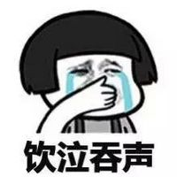

遥远的救世主人物关系梳理以及总结
前言
《遥远的救世主》是豆豆的“三部曲”中非常经典的一部作品，与这部作品的结缘，源于高中一位老师安利它的电视剧《天道》，当时并没有放在心上甚至是已经忘了，直到大学毕业工作以后，在豆瓣看到了《天道》的评论才决定要好好的去看看。结果一看就喜欢上了《天道》，几年时间反反复复看了有5、6遍的样子，再加上最近一年多的时间，感觉应该读点书、学点习提升一下自己，就买了豆豆的《遥远的救世主》、《天幕红尘》来好好的读一读。看了电视剧、读了原著感觉有了不同的认识，特意记录下来。
故事概况
故事讲述了一个鬼才，为了达成自己女朋友的愿望。通过自己的学识、资源等，利用消费者认知、法律空白、行业竞争、对手弱点等一切机遇，全局谋划，帮助一个贫困村完成市场经济意识的启蒙，进行独立意识的灌输；在他的帮助下，村民通过自身优势，自理更生参与到市场竞争，通过自身优势触发与大企业的利益碰撞，引发大企业的市场危机、企业危机，完成在大企业的完整音响制造产业链中，硬生生切出机箱生产到村里完成生产加工，从而在音响制造产业链中分得一杯羹，引导村民走向脱贫发展的道路。
人物关系图
电视剧看了几遍，原著读了一遍，对里面的人物关系比较清楚，为了更直观的呈现简单画了一个人物关系图，第一次画比较难看，但还是忍了

看《天道》感想
看了天道以后，真的有入坑的感觉，仿佛看了一个史诗级的电影一样，让人欲罢不能。
成功的英雄塑造
作品通过前期其下属评价、前期评价、学历以及经历讲述，迅速完成鬼才人设的设立；后面通过朋友论文化、帮朋友竞争到总裁职位、音响设备、对音乐理解、对股票的预判、跟女主的恋爱、通过女主对罪犯的审判沟通等实现鬼才人设的丰满；最后通过一场“看不见血”的商场布局，完成以一个全国贫困村家庭作坊式生产加几个发烧友组成的公司一夜间成为全国一线品牌的“神话”故事，来完成“英雄”形象的确立。看完以后眼里、脑子里全部都是男主的高大形象。
独到的观点见解
茶馆翻修升级意见
姐姐想将父亲多年的老茶馆给翻修升级，想让男主向父亲做工作，但男主拒绝了。其一，客观产权，属于父亲；其二，茶馆、茶客是一种平衡关系，要的是市井气，因此门槛不宜过高，该挣几个钱，父母开了一辈子茶馆心理清楚；其三，现在茶馆父母们在经营，每天有事做快乐、充实，是性价比最高的消费。
给好友支招竞争岗位
通过文化属性的分析，为好友在岗位中制定“以退为进”的策略，并好友进行“1比5”的赌注匹配，表示公平。
土匪式音响套路设计（这里不懂只是根据居中发烧友的评价，将自己带入）
通过土匪式音响设计，实现了音质的完美平衡，实现人声的高度还原，被发烧友称之为土匪式发烧模式。
《流浪者之歌》不同版本的比较
世界小提琴大师穆特、弗雷德里曼、海菲兹都分别演奏了《流浪者之歌》，通过对三人的比较说明，此人的文化水平以及音乐素养极高。
同样一首曲子，我们以穆特和弗雷德里曼的小提琴来做比较。穆特诠释的是悲伤、悲凉、悲戚；弗雷德里曼诠释的是悲愤、悲壮、悲怆;不一样,穆特她多了一些宫廷贵妇的哀怨，少了一些吉普赛人流浪不屈的精神。海菲兹当然无疑是一个伟大的小提琴演奏家，但是就这首曲子来说，我觉得他的诠释也不一定是最高境界，可能是因为太注意技巧上的严谨，反而染上了一丝匠气，少了一点儿虔诚。所以就这三个人演奏的同一首曲子来比较，我觉得穆特是心到手不到，海菲兹是手到心不到，只有弗雷德里曼那是叫手到心到。
孝道以及文化的诠释（电视剧增加情节）
借由父亲重病的情节，重新诠释-孝道，传统观念与当代观念的碰撞。
元英接到妹妹的电话，父亲突发脑溢血住院，他表现得很平静，马上决定返回家中。在医院里，大哥，元英和妹妹秋红，面对主治医生，医生给出的结论是极有可能是植物人。元英：医生，那我怎么做才能让我父亲死。
医生：中国没有安乐死的立法，我回答不了中国问题。这里是医院，只要病人没 有死亡，只要病人账上还有钱，医生就要继续治疗。
元英：好，谢谢。
一夜护理之后，元英回到家中。
秋红：二哥回来了。
丁母：情况好点儿没有啊？
秋红：二哥，你刚熬了一夜，赶快休息一会儿吧。
大哥：秋红，医院账上还有多少钱？
秋红：还够用几天的。钱快用完的时候，护士会通知家属去交钱的。
大哥：今天是第11天了，上呼吸机也5天了，我跟咱妈商量了一下，咱开个会， 看看咱爸这事儿该咋办，这钱该咋摊。
元英：如果是摊钱的事，我就不参加了。
大哥：为啥？你凭啥不参加？
元英：我只知道他是我的爹，他还是谁的爹我不知道。
宗教认识
为罪犯找净土
在审判一个充满道义感的十恶不赦的罪犯，如何让他开口，来推动案子的进展。
王明阳说：“神是什么？神是根据人的需要造出来的。”
芮小丹说：“这就是《圣经》神学理论上存在的问题。《圣经》的教义如果不能经受逻辑学的检验，可能在实践上就会存在障碍。如果经受了逻辑学的检验，那表明神的思维即是人的思维，就会否定神性。换一种说法，神性如果附加上人性的期望值，神性就打了折扣。然而神性如果失去了人性的期望值，那么人还需要神吗？”
王明阳的脸上露出了一丝笑意，问道：“既然你我的观点一致，而我又没有资格评价《圣经》，那么，你的资格又是从哪儿掉下来的呢？”
芮小丹平静地说：“《圣经》神学是关于人类精神的学说，是关于人的灵魂净化、升华，人的行为高尚、正典的学说。一味地攻击或捍卫神的真实性与否，都是愚昧的表现。前者没有理解基督教的历史价值和社会价值，后者没有理解基督教的真正境界。”
王明阳说：“人类历史必须要穿越宗教隧道，可以理解。但在当代历史条件下，《圣经》神学的社会价值在哪里？”
芮小丹说：“基督教的应许不以现实利益为交换，不参与社会利益的分配，这使得她能适应不同的生存空间，而她对信徒的道德要求无疑具有社会价值。”
王明阳轻蔑地问：“用哄孩子、吓孩子的方式？”
芮小丹说：“基督教相信，太高的道德平台需要太高的教育、太深的觉悟和太复杂的炼造过程，是一道靠人性本能很难迈进的窄门。于是，基督教便有了神与人的约，有了神的关于天国与火湖、永生与死亡的应许，让凡夫俗子因为恐惧死亡和向往天堂而守约。这是智与善的魔术，非读懂的人不能理解。但《圣经》告诉世人了，要进窄门。”
王明阳咄咄逼人地追问：“什么是窄门？”
芮小丹说：“不因上天堂与下地狱的因果关系而具有的极高人生境界，就是窄门。耶稣为拯救世人甘愿自己被钉在十字架上，是肉身的地狱，是灵魂的天堂。基督徒的得救缘于神的‘约’，缘于神的应许。但进不得窄门也同样缘于‘约’，缘于神的应许。窄门是基督道德理想的最高价值。”
王明阳无言以对，默默地看着芮小丹，眼睛里流露出钦佩的神色。
芮小丹说：“进了窄门，神立刻就会告诉你：我是不存在的，神就是你自己。但是，证到如此也并不究竟，神是什么？神即道，道法自然，如来。”
过了好一会儿，王明阳才惊叹地说了一句：“自愧弗如。”
芮小丹说：“《路加福音》里说：主啊，原谅他们，他们做的他们不知道。但此时此刻有一点你是知道的，你的生命需要一个让你的人性本能可以接受的句号。”
王明阳顿了一下，苍白地强调说：“好汉做事好汉当，我以生命赎罪了。”
芮小丹问道：“对一次以上的死刑，你拿什么赎罪？对于已经死去的亡灵和承受痛苦的生者，你拿什么赎罪？对于污染社会和败坏道德，你拿什么赎罪？”
王明阳说：“我讲了自己，就会连带出卖别人，这是一个心理问题，我的灵魂得到抚慰的本身就是我从这种出卖中得到的好处，我会看不起自己。”
芮小丹说：“出卖与背叛是两个概念。如果你是背叛邪恶，上帝都会加冕这种背叛。如果你的老大对一个将死之人清洗一下灵魂都不能理解，这种老大不评价也罢。现在摆在你面前的一个是无视江湖义气，一个是无视人性的尊严，你自己权衡。拿根稻草当柱子去支撑灵魂，至少让我觉得你对你的学识和智商不够尊重。”
王明阳沉思着，没有说话。
芮小丹说：“还人性一个清白，还社会一个公理，你的灵魂就得救了。”
王明阳问：“将死之人，得救了又有什么意义？”
芮小丹说：“一小时、一分钟都有意义。哪怕只有一分钟，人字就有尊严了，上苍会赐你带着一颗纯净的心走进你灵魂的天国。”
王明阳故意以一种无赖的口吻问道：“如果我无视这些，就是不说呢？”
芮小丹盯着他的眼睛，用极其平静的口吻说：“文明对于不能以人字来界定的人无能为力，我除了鄙视和震惊，不会再有第三种反应。人的法则是，一颗阴暗的心永远托不起一张灿烂的脸，这不是卫道士的说教，这是人性。”
王明阳茫然地问：“天国在哪儿？”
芮小丹庄重地说：“天国在你心里。”
审讯室里的场面在审案过程中并不多见，几乎感觉不到审讯的气氛，更像是两个人在谈心。无论是王明阳的表情还是芮小丹的表情，都看不到对抗的成分。
五台山论道
智玄大师放下茶碗，说：“施主上山并非为了佛理修证，有事不妨道来，贫僧虽老学无成，念句‘阿弥陀佛’却还使得。”
于是，丁元英把“神话”、“扶贫”的来龙去脉以及已经做的和将要做的向智玄大师简要讲了一遍，并且着重解释了主观上的“杀富济贫”和文化属性思考。这显然已经不是简单的市场竞争，也不是简单的扶贫，而是基于一种社会文化认识的自我作为。
智玄大师听完之后沉思了许久，说：“施主已胜算在手，想必也应该计算到得手之后的情形，势必会招致有识之士的一片声讨、责骂。得救之道，岂能是杀富济贫？”
韩楚风随口一问：“那得救之道是什么？”
这一问使智玄大师突然怔住了，顿然明白了丁元英“杀富济贫”的用心和讨个心安的由来，说道：“投石击水，不起浪花也泛涟漪，妙在以扶贫而命题。当有识之士骂你比强盗还坏的时候，责骂者，责即为诊，诊而不医，无异于断为绝症，非仁人志士所为，也背不起这更大的骂名。故而，责必论道。”
丁元英说：“晚辈以为，传统观念的死结就在一个‘靠’字上，在家靠父母，出门靠朋友，靠上帝、靠菩萨、靠皇恩……总之靠什么都行，就是别靠自己。这是一个沉积了几千年的文化属性问题，非几次新文化运动就能开悟。晚辈无意评说道法，只在已经缘起的事情里顺水推舟，借英雄好汉的嗓子喊上两声，至少不违天道朝纲。”
韩楚风来五台山之前只知道丁元英要拜见高僧大德，少不了谈经论道，却并不知道丁元英拜佛的具体目的，直到这时才完全明白。
智玄大师说：“以施主之参悟，心做心是，何来讨个心安呢？”
丁元英说：“无忏无愧的是佛，晚辈一介凡夫，不过是多识几个字的嘴上功夫，并无证量可言。我知道人会骂我，我以为佛不会骂我，是晚辈以为，并非真不会挨骂。大师缘何为大师？我以为是代佛说话的觉者。”
智玄大师略微思忖了一下，说：“贫僧乃学佛之人，断不可代佛说话，亦非大师。得救之道自古仁人志士各有其说，百家争鸣。贫僧受不起施主一个‘讨’字，仅以修证之理如实观照，故送施主四个字：大爱不爱。”
丁元英双手合十给智玄大师恭敬行了一个佛礼，说道：“谢大师！”
智玄大师说：“弱势得救之道，也有也没有。没有竞争的社会就没有活力，而竞争必然会产生贫富、等级，此乃天道，乃社会进步的必然代价。无弱，强焉在？一个‘强’字，弱已经在其中了。故而，佛度心苦，修的是一颗平常心。”
韩楚风因为先前不了解情况，所以一直没有参与谈话。此时听了智玄大师一番话心生感慨，说道：“佛教主张利和同均，大师坦言等级乃天道与代价，不拘门户之见，令晚辈十分敬佩。晚辈在想，如果强者在公开、合法的情况下都可以做到杀掠，那么在不公开、不合法的条件下，弱势还剩下多大空间？佛度心苦虽慈悲，但人毕竟还有物质的一面。”
智玄大师对韩楚风笑了笑，说：“施主不必拘礼，请讲。”
韩楚风说：“如果主流文化能在弱势群体期望破格获取与强势群体期望更高生命价值的社会需求之间建立一个链接的纽带，或许更有积极意义。强势群体仅仅适用一般的竞争规则是不够的，主流文化应该对强势道德提出更高的要求，构建强势文化体系，赋予强势群体更高的生命价值。当然，这首先是以不平等为先决条件。”
智玄大师说：“利和同均，不平等已在其中。”
韩楚风说：“主流文化，当是推动社会进步、改善社会关系的文化。如果人的行为首先是政治的或宗教的需要，那么这种价值无疑也首先是政治的或宗教的价值。当社会将道德价值全部锁定在政治文化和宗教文化的时候，个人道德就没有价值空间了，既不利于鼓励强势对弱势的关注，也不利于社会整体道德素质由量变到质变的转化。”
智玄大师说：“施主的观点与佛教的主张并不矛盾，不同的是施主认为主流文化应该给强者个人一定的道德价值空间。贫僧以为，无论功德记在哪一家的账上，风调雨顺、国泰民安都将是众生的福报。”
韩楚风说：“只是，等级一直是我们社会文化的禁区，大家所以小心翼翼绕开禁区，是唯恐平等、尊严之类的东西受到伤害。”
喝过一道茶，智玄大师给大家续上一轮开水，对丁元英宽怀一笑，说：“释、道、儒是中国传统文化的三大体系，施主这一刀下去，一个都没幸免哪，哈哈哈……”
丁元英说：“不敢，不敢。释、道、儒均是博大精深的学派，支撑中华民族走过了几千年的文明历程，是伟大的文明。但是，社会在发展，传统文化毕竟是以皇恩浩荡为先决条件的文化，讲的都是皆空、无为、中庸的理，以抑制个性而求生求解。当今社会已经发展到了市场经济的*与法制，诸家学说也面临一个如实观照而俱进的课题，是传统？还是传承？统则僵死，承则光大。”
智玄大师说：“施主尚未畅所欲言，不好。海纳百川，施主纵是沧海一滴，我佛也愿汇而融之。今日有缘一叙，自当请施主开诚布公，以利佛理修证。”
丁元英说：“晚辈叹服佛法究竟真理真相的辩证思维，如是不可思议。但是，晚辈以为佛教包括了佛法，而佛法有别于佛教。佛教以佛法证一，进而证究竟，最终是为给心找个不苦的理由，成佛，无量寿，极乐。佛教以假度真的方便法门住福相、住寿相、住果相，是以无执无我为名相的太极我执，致使佛教具有了迷信、宿命、贪执的弱势文化特征，已然障蔽佛法。晚辈以为，如果佛教能依佛法破除自身迷障，不住不拘个人解脱，以佛法的如是不可思议究竟生产力与文明的真理真相，则佛法的佛教即出离宗教的佛教，成为觉悟众生的大乘法度，慧于纲纪泽于民生，是名普度众生。”
智玄大师沉默不语，静静地看着丁元英，过了许久黯然感叹道：“得智的得智，化缘的化缘，烧香的烧香，坐禅的坐禅。”
丁元英和了一句：“各尽所能，各取所需。”
股票趋势预判
首先，故事开局讲了男主如何用自己的学识，通过私募基金的方式在一年内使本金翻了一倍；其次，在女主面前受到刁难时，通过预判某只股票在一年时间内至少翻一倍的预测并应验。
关于如何实现预判解析：
女友芮小丹在送行的时候，曾经谈及过股票投资。这个对话，提出了自己的疑惑。丁元英回复，炒股就像禅，知之为不知，不知更非知。言语道破，说不明白。
芮小丹再次追问，书店那么多教人炒股的书，到你这竟然不能说了。
丁元英回复，如果炒股能赚钱，谁有时间去写书？
在股市里面，永远是明白人赚糊涂人的钱。这里面有政治经济学，有制度面，有技术面。如果能用简单的语言来概括，那么股市将会是人人是赢家。问题来了，那赢家赚谁的钱？
股市说白了是零和游戏，有人盈利必然有人亏损。
股市投机，即要盯着庄家的狼口，又要盯着监管者的大刀。
如果想要获得利润，必须学会在狼口中夺食，还要防范监管的大刀落下。
投机艺术，就是与狼共舞吃肉，大刀砍下之前抽身。
商战布局
在丁元英决定帮助王庙村时，他的‘杀富济贫’大致分为以下步骤:
一、观察王庙村现有的条件，可能做事的条件。
二、‘招商引资’，借助欧阳雪来达到控股，实际上就是股权控制。
三、将发烧友与王庙村的农民联系在一起，做‘可能之能’之事，充分发挥他们的主观能动性。
四、在现有的条件下，与市场紧密结合起来，其一：欧洲代理；其二：北京音响展览会。
五、引导乐圣公司，这里引用电视剧中的一段话：格律诗够狠，乐圣够蠢，伯爵够阴，斯雷克够损。
六、让法院媒体起哄，其一达到宣传格律诗的目的，其二促成格律诗与乐圣的合作。
作者：昨日之云
链接：https://www.jianshu.com/p/ecc8426d2541
来源：简书
著作权归作者所有。商业转载请联系作者获得授权，非商业转载请注明出处。
读《遥远的救世主》感悟
第一阶段：爽文，男主神机妙算
文化、思想，深刻而不同
男主通过别人的评价、五台山论道、音乐分析、对贫困村的成因以及能否得救的问题表述等，体现了一个有文化内涵、有思想深度、有独立思考与见解独到的是魔是鬼都可以，就是不是人。
能力，把握判断分毫不差
通过朋友竞争岗位、股票预判、审问罪犯的净土、小人物扒拉井沿又掉了下去、格律诗的杀富济贫的布局等，重新体现了一个思维细致缜密、判断准确严谨、运筹帷幄决胜千里之外的鬼才。
淡薄，来去自如的潇洒
有文化、有思想、有能力，完全却可以在社会上获取名声、地位、金钱，却异常的低调，在古城的小屋听音乐吃泡面，在文化人的酒桌上也是认人套路低头喝酒，完成格律诗的布局却直接转身离去，这是谁，这是什么境界，这不是金庸武侠的张无忌吗，这不是杨过吗，这不是狄云大侠吗？最终，作者完成了由不是人的高人，到鬼才再到大侠绝世高手的人设树立，看完作品即若有所思又让人热血沸腾。
第二阶段：作品带来什么
结识一个“人”：看到不一样的风景、听到不一样的声音
通过作品我们认识了男主，在感叹男主的文化、能力、思想的同时，我们也领略了一种魅力，一种文化的魅力，一种思考的魅力，一种布局的魅力。认识了男主也为我们展现了不一样的风景、听到了不一样的声音。
获得一个观点：通过文化视角去把握人、事、物
男主为所作所为皆是通过对文化的深刻认识和解读，做出的基本判断，正常操作。因此我们需要提升文化素养，进而提升思想力，最终获得一种更高的视角去审视人、事、物，从而做到随心所欲，也就是天道。（ps:个人的解读，没有真正的理解。）
获得一种胸襟：每一种观点行为都是个人认知的结果
我们每个人都是困在我们目前认知的“困兽”。男主的困境是认识到传统文化弱势却无力改变；韩总的困境是困在总裁职位的竞争中；肖雅文的困境是各种资历情况一般；欧阳雪的困境是是要经营好酒店就饿不死；李雨峰的困境是不能低头……所以当某件事大家有不同的意见的时候，不要着急，更不要争吵，因为每个人都困在自己当前的认知里面，学会换位思考，学会包容。
第三阶段：我们能做到什么
多认识“高人”
我们人人都想成为男主，但是可能吗？这种角色我们生活中听不到也见不到。但我们可以学习肖亚文，故事的伏笔是她，埋了一个机遇，中间的过程完全没有参与却享受的最终的果实，并且这个过程是我们可以操作甚至现学也能学会。我们去结识有能力、有学识、有思想的人，不成朋友，不是伙伴但能说上话就够了。
认识这个人能让你看到不一样的风景，听到不一样的声音，能让你思考、觉悟这已经够了。其他还有很多，比如机会、帮助，我不确。这个再一般人看来可能不重要，但我知道这个人很重要。
深度思考
对人、对事，能够从更高的维度去思考，甚至从文化的角度去审视去解读，能够获得不一样的视角。有了这种思考能力为人、处事能够达到一种圆融自通的境界。对个人的成长、家庭、事业、文化、人生境界、商业等都能有较大的提升。
写到最后
首先，感谢老师安利
我想如果没有高中老师的安利，我关注《天道》的概率会很小。首先，没有老师的安利我可能不会在豆瓣上关注这部作品，这毕竟是一部2006年的电视剧，我看的时候大约在15~16年左右，时间比较长了；其次，电视剧标清画面对于我习惯电影画质的人来说，真的不太习惯。否则，我真的错过了不一样的作品，生活的航向有了偏移，因此要感谢我的高中老师（这就是教育吧，有的是知识，有的是方法，有的是建议，有的是思想，有的是有的时候给你的是你未来可能理解，也可能永远理解不了的，但他都想传达给你）。
最后感谢导演、作者
无论如何也要感谢导演的编导还原演绎以及作者的构思创作，这部作品虽然不能让你成为“大侠”，但能给与你启迪，引发你思考就够了。我也是从看了电视剧以后开始培养读书、思考、复盘的习惯，让我的生活发生了偏移。